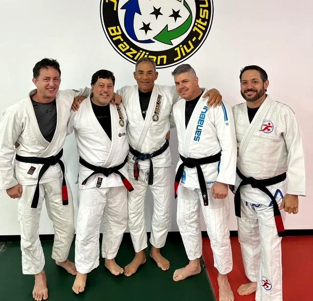

CONCEPT 01 · BUSY PROFESSIONALS
THE LONG GAME
A representative adult story, not a testimonial. The conflict is not motivation. It is fitting serious progress into a demanding life.

PRIVATE COACHING
YOUR CALENDAR
GOT TIGHTER.
YOUR STANDARDS
STAYED HIGH.
BUILT FORTHE LONG GAME
Serious jiu-jitsu does not require an open calendar. It requires a clear diagnosis, a game built around you, and training that makes every session count.
Story tension: ambition stayed; available time changed.
Offer: Private Game Map assessment.
PRIVATE JIU-JITSU FOR BUSY ADULTS
YOUR CALENDAR
GOT TIGHTER.
YOUR STANDARDS
STAYED HIGH.
Private coaching for adults who still want real progress, but need the training to fit the life they have now.
REQUEST MY GAME MAP Focused assessment. Individual plan. No generic private lesson.THE MOMENT
TIME GOT TIGHTER. THE GOAL STAYED.
Work became more demanding. Family time mattered more. Open mat windows became harder to find. The answer was not to care less about jiu-jitsu. It was to stop spending limited training time guessing what to work on.
CAMPAIGN BELIEF
ADULTS DO NOT NEED WATERED-DOWN JIU-JITSU. THEY NEED A BETTER MAP.
THE PRIVATE GAME MAP
THREE STEPS TO YOUR PERSONAL GAME MAP.
DIAGNOSE
Find where positions, decisions, and habits break down.
BUILD
Choose a small set of connected positions that match your body and goals.
PRESSURE TEST
Train the map against real resistance so it holds up outside the lesson.

SERIOUS, PERSONAL, PRACTICAL
CLEAR NEXT STEPS BEAT RANDOM TECHNIQUES.
Joao coaches the decision behind the movement, then helps you connect it to the rest of your game.
START WITH A CONVERSATION
REQUEST A PERSONAL GAME MAP
Tell us what you want to improve and what makes training difficult right now.